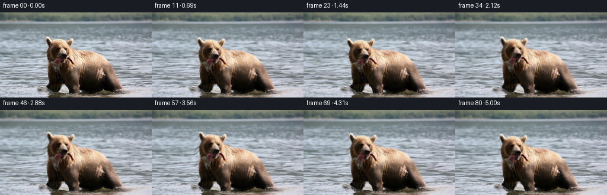
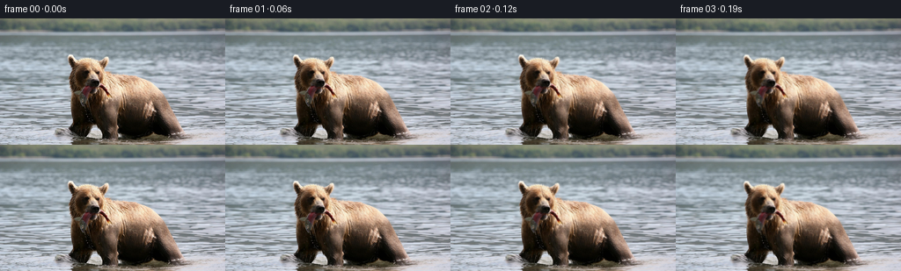

CODING AGENTS AS PIXEL WORLD MODELS
traex/GPT-6.1-Sol · 0872_s0
点击播放 · 原生 RGB 像素
逐轮保存的候选
回放视频、检查图与代码变化。
每份候选均可单独播放。实际图片检查记录在下方工具轨迹中。
候选 01播放与检查图
点击播放 · 原生 RGB 像素


展开代码变化
--- 上一保存版本
+++ 本次保存版本
@@ -0,0 +1,163 @@
+"""RGB-only animation from the supplied photograph, using smooth pixel transport.
+
+The bear's head and body have separate, smoothly joined motion fields. The
+river uses traveling multiscale surface motions. No models or external assets.
+"""
+from pathlib import Path
+import numpy as np
+from PIL import Image, ImageDraw, ImageFilter
+import artifact_io
+
+ROOT = Path(__file__).resolve().parent
+W, H, N = 256, 144, 81
+Y, X = np.mgrid[:H, :W].astype(np.float32)
+PHOTO = np.asarray(Image.open(ROOT / 'first_frame.png').convert('RGB'), dtype=np.uint8)
+SRC = PHOTO.astype(np.float32)
+
+
+def smooth(a):
+ a = np.clip(a, 0, 1)
+ return a*a*(3-2*a)
+
+
+def sample(a, x, y):
+ x = np.clip(x, 0, W-1.001)
+ y = np.clip(y, 0, H-1.001)
+ xi, yi = x.astype(np.int32), y.astype(np.int32)
+ u, v = x-xi, y-yi
+ if a.ndim == 3:
+ u, v = u[..., None], v[..., None]
+ return ((a[yi, xi]*(1-u) + a[yi, xi+1]*u)*(1-v)
+ + (a[yi+1, xi]*(1-u) + a[yi+1, xi+1]*u)*v)
+
+
+# Photographic subject silhouette, expanded to transport its antialiased
+# boundary and a narrow strip of surrounding water without cutout seams.
+outline = [(77,43),(79,41),(83,43),(86,48),(91,46),(99,45),
+ (108,46),(113,49),(117,46),(121,43),(124,44),(124,51),
+ (120,58),(120,59),(126,61),(134,63),(154,65),(170,71),
+ (181,81),(190,93),(196,105),(201,116),(207,127),(207,131),
+ (198,134),(187,135),(170,135),(160,137),(137,136),(132,138),
+ (119,137),(117,134),(113,132),(112,128),(109,124),(105,122),
+ (102,123),(100,127),(100,131),(96,134),(89,136),(83,134),
+ (80,130),(78,127),(81,122),(82,118),(80,104),(79,95),
+ (80,83),(78,75),(77,69),(79,63),(81,57),(80,53),(77,49)]
+mask_im = Image.new('L', (W,H), 0)
+ImageDraw.Draw(mask_im).polygon(outline, fill=255)
+# Gaussian feathering outside a dilated silhouette: all fur remains coherent.
+transport = np.asarray(mask_im.filter(ImageFilter.MaxFilter(9)).filter(
+ ImageFilter.GaussianBlur(3)), dtype=np.float32)/255
+transport = np.maximum(transport, np.asarray(mask_im, np.float32)/255)
+water_exclusion = np.asarray(mask_im.filter(ImageFilter.MaxFilter(5)).filter(
+ ImageFilter.GaussianBlur(2)), dtype=np.float32)/255
+water_exclusion = np.maximum(water_exclusion, np.asarray(mask_im, np.float32)/255)
+
+# C1 interpolation of a few quiet, irregular head movements rather than a
+# rigid periodic rocking loop. Time is seconds.
+TIMES = np.array([0, .60, 1.25, 1.95, 2.65, 3.35, 4.15, 5.0])
+KEYS = np.array([[0,0,0], [.65,.4,-.015], [-1.25,1.8,-.060],
+ [-.75,.5,-.023], [1.5,-2.7,.025],
+ [1.8,-3.4,.048], [.35,-2.0,.017], [-.6,-1.0,-.015]])
+TANGENTS = np.zeros_like(KEYS)
+TANGENTS[1:-1] = (KEYS[2:]-KEYS[:-2])/(TIMES[2:]-TIMES[:-2])[:,None]
+
+def head_pose(t):
+ k = min(len(TIMES)-2, max(0, np.searchsorted(TIMES,t,side='right')-1))
+ dt = TIMES[k+1]-TIMES[k]
+ u = (t-TIMES[k])/dt
+ return ((2*u**3-3*u*u+1)*KEYS[k] + (u**3-2*u*u+u)*dt*TANGENTS[k]
+ +(-2*u**3+3*u*u)*KEYS[k+1]+(u**3-u*u)*dt*TANGENTS[k+1])
+
+
+def flow(x, y, t):
+ m = sample(transport,x,y)
+ w = (1-sample(water_exclusion,x,y))*smooth((y-12)/28)
+ depth = np.clip((y-18)/126,0,1)
+ # Smooth, directional current, with small independently propagating
+ # surface ripples. Differences from t=0 ensure an exact initial condition.
+ wx = (1.10*t*(.25+.75*depth)
+ +(.35+1.00*depth)*(np.sin(y*.34+x*.026-1.95*t)-np.sin(y*.34+x*.026))
+ +.38*(np.sin(y*.69-x*.047+2.65*t)-np.sin(y*.69-x*.047)))
+ wy = ((.17+.29*depth)*(np.sin(x*.075+y*.105-1.45*t)-np.sin(x*.075+y*.105))
+ +.20*depth*(np.sin(x*.14-y*.20-2.1*t)-np.sin(x*.14-y*.20)))
+
+ settle = 1-np.exp(-t*2.0)
+ # The feet stay near the river bed as the shoulders shift their weight.
+ anchor = .25+.75*smooth((137-y)/50)
+ bx = (-.37*t + .65*np.sin(t*1.65))*anchor
+ by = (.34*np.sin(t*2.8) + .23*(np.cos(t*1.6)-1))*anchor
+ breathe = .0055*np.sin(t*2.55)*settle
+ bx += breathe*(x-138)*smooth((134-y)/25)
+ by += breathe*.33*(y-126)
+
+ hx,hy,angle = head_pose(t)
+ head = smooth((103-y)/27)*smooth((144-x)/23)
+ cs,sn = np.cos(angle),np.sin(angle)
+ qx,qy=x-111,y-96
+ rx = (cs-1)*qx-sn*qy+hx
+ ry = sn*qx+(cs-1)*qy+hy
+ bx += head*rx
+ by += head*ry
+
+ # Small bite motions are limited to the muzzle. The original fish
+ # remains in the mouth and its lower part sways under gravity.
+ bite = (.5-.5*np.cos(2*np.pi*1.05*t))*settle
+ muzzle = np.exp(-((x-105)/12)**2-((y-82)/7)**2)
+ by -= .65*bite*muzzle
+ tail = np.exp(-((x-95)/6.5)**4)*smooth((y-81)/13)*smooth((106-y)/6)
+ bx += tail*(.90*np.sin(2*np.pi*.82*t)+.25*np.sin(2*np.pi*1.7*t))*settle
+ by += tail*.26*np.sin(2*np.pi*1.05*t)*settle
+
+ # A slight weight transfer in the near foreleg, diminishing at waterline.
+ leg = np.exp(-((x-91)/10)**4)*smooth((y-105)/10)*smooth((135-y)/9)
+ bx += leg*.8*np.sin(t*2.0)*settle
+ by += leg*.5*(.5-.5*np.cos(t*2.0))*settle
+ return bx*m+wx*w, by*m+wy*w
+
+
+def droplets(frame, t):
+ # Occasional tiny beads descending from the wet catch. They are
+ # subpixel splats, not persistent drawn streaks.
+ hx,hy,ang=head_pose(t)
+ for release in (.70,1.55,2.8,3.85,4.45):
+ age=t-release
+ if not (0<age<.64):
+ continue
+ px = 96 + hx - .37*t + .65*np.sin(t*1.65) + .8*np.sin(3*release) + 1.6*age
+ py = 103+hy+25*age+28*age*age
+ if py>135:
+ continue
+ # Fall in front of the shaded chest, with a translucent cool gleam.
+ alpha=(smooth(age/.08)*(1-smooth((age-.51)/.13)))*.46
+ dist=((X-px)/.44)**2+((Y-py)/.72)**2
+ a=(np.exp(-dist*1.7)*alpha)[...,None]
+ frame=frame*(1-a)+np.array([198,211,216],np.float32)*a
+ return frame
+
+
+def generate():
+ frames = np.empty((N,H,W,3), dtype=np.uint8)
+ frames[0]=PHOTO
+ for i in range(1,N):
+ t=i/16
+ # Invert the smooth forward transport. Four iterations are ample
+ # at these small displacements and preserve crisp original detail.
+ sx,sy=X.copy(),Y.copy()
+ for _ in range(4):
+ dx,dy=flow(sx,sy,t)
+ sx,sy=X-dx,Y-dy
+ rgb=sample(SRC,sx,sy)
+ wet=(1-sample(water_exclusion,sx,sy))*smooth((Y-24)/20)
+ # Very low amplitude traveling changes in reflection brightness.
+ light=(.65*(np.sin(Y*.31+X*.063-2.1*t)-np.sin(Y*.31+X*.063))
+ +.35*(np.sin(Y*.68-X*.025+3.0*t)-np.sin(Y*.68-X*.025)))
+ rgb += (light*wet)[...,None]*np.array([.88,.96,1.0])
+ rgb=droplets(rgb,t)
+ frames[i]=np.clip(np.rint(rgb),0,255).astype(np.uint8)
+ return frames
+
+if __name__=='__main__':
+ frames=generate()
+ assert np.array_equal(frames[0], PHOTO)
+ artifact_io.save(frames, ROOT)
+ print(f'Saved {len(frames)} RGB frames, {W}x{H}, 16 fps.')
候选 02播放与检查图
点击播放 · 原生 RGB 像素

展开代码变化
--- 上一保存版本
+++ 本次保存版本
@@ -45,9 +45,8 @@
mask_im = Image.new('L', (W,H), 0)
ImageDraw.Draw(mask_im).polygon(outline, fill=255)
# Gaussian feathering outside a dilated silhouette: all fur remains coherent.
-transport = np.asarray(mask_im.filter(ImageFilter.MaxFilter(9)).filter(
- ImageFilter.GaussianBlur(3)), dtype=np.float32)/255
-transport = np.maximum(transport, np.asarray(mask_im, np.float32)/255)
+transport = np.asarray(mask_im.filter(ImageFilter.MaxFilter(17)).filter(
+ ImageFilter.GaussianBlur(4)), dtype=np.float32)/255
water_exclusion = np.asarray(mask_im.filter(ImageFilter.MaxFilter(5)).filter(
ImageFilter.GaussianBlur(2)), dtype=np.float32)/255
water_exclusion = np.maximum(water_exclusion, np.asarray(mask_im, np.float32)/255)
@@ -71,11 +70,11 @@
def flow(x, y, t):
m = sample(transport,x,y)
- w = (1-sample(water_exclusion,x,y))*smooth((y-12)/28)
+ w = (1-m)*smooth((y-12)/28)
depth = np.clip((y-18)/126,0,1)
# Smooth, directional current, with small independently propagating
# surface ripples. Differences from t=0 ensure an exact initial condition.
- wx = (1.10*t*(.25+.75*depth)
+ wx = (.70*t*(.25+.75*depth)
+(.35+1.00*depth)*(np.sin(y*.34+x*.026-1.95*t)-np.sin(y*.34+x*.026))
+.38*(np.sin(y*.69-x*.047+2.65*t)-np.sin(y*.69-x*.047)))
wy = ((.17+.29*depth)*(np.sin(x*.075+y*.105-1.45*t)-np.sin(x*.075+y*.105))
候选 03播放与检查图
可观测工具轨迹
实际执行的命令与返回图片。
命令 1exit 0
/bin/bash -lc 'ls -la && cat prompt.txt && cat GENERATION_RULES.md'
命令 2exit 0
/bin/bash -lc "cat task_spec.json && cat artifact_io.py && python - <<'PY'
from PIL import Image
import numpy as np
im=np.array(Image.open('first_frame.png').convert('RGB'))
print(im.shape)
# luminance and RGB category character map
im=np.array(Image.fromarray(im).resize((96,54)))
for row in im:
s=''
for r,g,b in row.astype(float):
v=(r+g+b)/3
if v<35:c='@'
elif v<60:c='#'
elif r>g*1.2 and g>b*1.15:c='B' if v>90 else 'b'
elif b>r*1.15:c='~' if v>150 else '='
elif v>215:c=' '
elif v>180:c='.'
elif v>145:c=':'
elif v>110:c=';'
elif v>85:c='o'
else:c='O'
s+=c
print(s)
PY"命令 3exit 0
/bin/bash -lc "python - <<'PY'
from PIL import Image
import numpy as np
I=np.asarray(Image.open('first_frame.png'))
for y in range(40,139,3):
print(f'{y:3d} '+''.join(' .:-=+*#%@'[min(9,int(v)//26)] for v in I[y,65:200:2,:3].mean(1)))
print('RGB at samples:')
for y in range(45,141,5):
print(y, [(x,tuple(I[y,x,:3])) for x in range(75,191,10)])
PY"命令 4exit 0
/bin/bash -lc "python - <<'PY'
from PIL import Image
import numpy as np
I=np.array(Image.open('first_frame.png').convert('RGB')).astype(float)
# head color classes 1px all columns
print('x: 75-132. W water, e cream,t tan,f fur,m dark,b black,p pink,s silver')
for y in range(43,96):
s=''
for r,g,b in I[y,75:133]:
lum=(r+g+b)/3
if b>r+3 and g>r+2:c=' '
elif lum<22:c='b'
elif lum<45:c='m'
elif r-g>10 and g-b>5:
c='e' if lum>180 else 't' if lum>120 else 'f'
elif r>g+12 and b>g-5:c='p'
elif lum>155:c='s'
elif lum>85:c='x'
else:c='d'
s+=c
print(f'{y:2d} {s}')
PY"命令 5exit 0
/bin/bash -lc "python - <<'PY'
from PIL import Image
import numpy as np
I=np.asarray(Image.open('first_frame.png')).astype(float)
# classify cropped bear front and mouth
for y in range(65,121):
s=''
for r,g,b in I[y,80:127]:
v=(r+g+b)/3
if b>r+3 and g>r+2:c=' '
elif v<20:c='0'
elif v<38:c='1'
elif r-g<9 and g-b<16:c='S' if v>85 else 's' if v>40 else '2'
elif r>g+13 and b>g-5:c='P'
else:c='E' if v>175 else 'T' if v>120 else 'F' if v>70 else 'f' if v>40 else '2'
s+=c
print(f'{y:3d} {s}')
PY"命令 6exit 0
/bin/bash -lc "python - <<'PY'
from PIL import Image
import numpy as np
I=np.asarray(Image.open('first_frame.png')).astype(int)
for y in range(76,105):
print(y,[(x,tuple(I[y,x,:3])) for x in range(88,110,2)])
PY"命令 7exit 0
/bin/bash -lc "python - <<'PY'
from PIL import Image
import numpy as np
A=np.asarray(Image.open('first_frame.png')).astype(int); R,G,B=A.transpose(2,0,1)
M=(R>B+4)&(R>G+0)
for y in range(40,144):
xs=np.flatnonzero(M[y,70:210])+70
# group with gap at most 3
groups=np.split(xs,np.where(np.diff(xs)>3)[0]+1)
good=[(g[0],g[-1]) for g in groups if len(g)>1]
print(y,good)
PY"命令 8exit 0
/bin/bash -lc "python - <<'PY'
from PIL import Image
import numpy as np
A=np.asarray(Image.open('first_frame.png')).astype(float)
for y in range(114,144):
print('%3d '%y+''.join(' ' if b>r+2 else '.' if (r+g+b)/3>160 else ':' if (r+g+b)/3>100 else '+' if (r+g+b)/3>55 else '#' if (r+g+b)/3>25 else '@' for r,g,b in A[y,70:226]))
print('mouth gray pixels')
for y in range(81,105):
print(y, ''.join(' ' if max(p)-min(p)>30 else 'S' if p.mean()>55 else ':' if p.mean()>30 else '#' for p in A[y,87:104]))
PY"命令 9exit 0
/bin/bash -lc "cat > generate.py <<'PY'
\"\"\"RGB-only animation from the supplied photograph, using smooth pixel transport.
The bear's head and body have separate, smoothly joined motion fields. The
river uses traveling multiscale surface motions. No models or external assets.
\"\"\"
from pathlib import Path
import numpy as np
from PIL import Image, ImageDraw, ImageFilter
import artifact_io
ROOT = Path(__file__).resolve().parent
W, H, N = 256, 144, 81
Y, X = np.mgrid[:H, :W].astype(np.float32)
PHOTO = np.asarray(Image.open(ROOT / 'first_frame.png').convert('RGB'), dtype=np.uint8)
SRC = PHOTO.astype(np.float32)
def smooth(a):
a = np.clip(a, 0, 1)
return a*a*(3-2*a)
def sample(a, x, y):
x = np.clip(x, 0, W-1.001)
y = np.clip(y, 0, H-1.001)
xi, yi = x.astype(np.int32), y.astype(np.int32)
u, v = x-xi, y-yi
if a.ndim == 3:
u, v = u[..., None], v[..., None]
return ((a[yi, xi]*(1-u) + a[yi, xi+1]*u)*(1-v)
+ (a[yi+1, xi]*(1-u) + a[yi+1, xi+1]*u)*v)
# Photographic subject silhouette, expanded to transport its antialiased
# boundary and a narrow strip of surrounding water without cutout seams.
outline = [(77,43),(79,41),(83,43),(86,48),(91,46),(99,45),
(108,46),(113,49),(117,46),(121,43),(124,44),(124,51),
(120,58),(120,59),(126,61),(134,63),(154,65),(170,71),
(181,81),(190,93),(196,105),(201,116),(207,127),(207,131),
(198,134),(187,135),(170,135),(160,137),(137,136),(132,138),
(119,137),(117,134),(113,132),(112,128),(109,124),(105,122),
(102,123),(100,127),(100,131),(96,134),(89,136),(83,134),
(80,130),(78,127),(81,122),(82,118),(80,104),(79,95),
(80,83),(78,75),(77,69),(79,63),(81,57),(80,53),(77,49)]
mask_im = Image.new('L', (W,H), 0)
ImageDraw.Draw(mask_im).polygon(outline, fill=255)
# Gaussian feathering outside a dilated silhouette: all fur remains coherent.
transport = np.asarray(mask_im.filter(ImageFilter.MaxFilter(9)).filter(
ImageFilter.GaussianBlur(3)), dtype=np.float32)/255
transport = np.maximum(transport, np.asarray(mask_im, np.float32)/255)
water_exclusion = np.asarray(mask_im.filter(ImageFilter.MaxFilter(5)).filter(
ImageFilter.GaussianBlur(2)), dtype=np.float32)/255
water_exclusion = np.maximum(water_exclusion, np.asarray(mask_im, np.float32)/255)
# C1 interpolation of a few quiet, irregular head movements rather than a
# rigid periodic rocking loop. Time is seconds.
TIMES = np.array([0, .60, 1.25, 1.95, 2.65, 3.35, 4.15, 5.0])
KEYS = np.array([[0,0,0], [.65,.4,-.015], [-1.25,1.8,-.060],
[-.75,.5,-.023], [1.5,-2.7,.025],
[1.8,-3.4,.048], [.35,-2.0,.017], [-.6,-1.0,-.015]])
TANGENTS = np.zeros_like(KEYS)
TANGENTS[1:-1] = (KEYS[2:]-KEYS[:-2])/(TIMES[2:]-TIMES[:-2])[:,None]
def head_pose(t):
k = min(len(TIMES)-2, max(0, np.searchsorted(TIMES,t,side='right')-1))
dt = TIMES[k+1]-TIMES[k]
u = (t-TIMES[k])/dt
return ((2*u**3-3*u*u+1)*KEYS[k] + (u**3-2*u*u+u)*dt*TANGENTS[k]
+(-2*u**3+3*u*u)*KEYS[k+1]+(u**3-u*u)*dt*TANGENTS[k+1])
def flow(x, y, t):
m = sample(transport,x,y)
w = (1-sample(water_exclusion,x,y))*smooth((y-12)/28)
depth = np.clip((y-18)/126,0,1)
# Smooth, directional current, with small independently propagating
# surface ripples. Differences from t=0 ensure an exact initial condition.
wx = (1.10*t*(.25+.75*depth)
+(.35+1.00*depth)*(np.sin(y*.34+x*.026-1.95*t)-np.sin(y*.34+x*.026))
+.38*(np.sin(y*.69-x*.047+2.65*t)-np.sin(y*.69-x*.047)))
wy = ((.17+.29*depth)*(np.sin(x*.075+y*.105-1.45*t)-np.sin(x*.075+y*.105))
+.20*depth*(np.sin(x*.14-y*.20-2.1*t)-np.sin(x*.14-y*.20)))
settle = 1-np.exp(-t*2.0)
# The feet stay near the river bed as the shoulders shift their weight.
anchor = .25+.75*smooth((137-y)/50)
bx = (-.37*t + .65*np.sin(t*1.65))*anchor
by = (.34*np.sin(t*2.8) + .23*(np.cos(t*1.6)-1))*anchor
breathe = .0055*np.sin(t*2.55)*settle
bx += breathe*(x-138)*smooth((134-y)/25)
by += breathe*.33*(y-126)
hx,hy,angle = head_pose(t)
head = smooth((103-y)/27)*smooth((144-x)/23)
cs,sn = np.cos(angle),np.sin(angle)
qx,qy=x-111,y-96
rx = (cs-1)*qx-sn*qy+hx
ry = sn*qx+(cs-1)*qy+hy
bx += head*rx
by += head*ry
# Small bite motions are limited to the muzzle. The original fish
# remains in the mouth and its lower part sways under gravity.
bite = (.5-.5*np.cos(2*np.pi*1.05*t))*settle
muzzle = np.exp(-((x-105)/12)**2-((y-82)/7)**2)
by -= .65*bite*muzzle
tail = np.exp(-((x-95)/6.5)**4)*smooth((y-81)/13)*smooth((106-y)/6)
bx += tail*(.90*np.sin(2*np.pi*.82*t)+.25*np.sin(2*np.pi*1.7*t))*settle
by += tail*.26*np.sin(2*np.pi*1.05*t)*settle
# A slight weight transfer in the near foreleg, diminishing at waterline.
leg = np.exp(-((x-91)/10)**4)*smooth((y-105)/10)*smooth((135-y)/9)
bx += leg*.8*np.sin(t*2.0)*settle
by += leg*.5*(.5-.5*np.cos(t*2.0))*settle
return bx*m+wx*w, by*m+wy*w
def droplets(frame, t):
# Occasional tiny beads descending from the wet catch. They are
# subpixel splats, not persistent drawn streaks.
hx,hy,ang=head_pose(t)
for release in (.70,1.55,2.8,3.85,4.45):
age=t-release
if not (0<age<.64):
continue
px = 96 + hx - .37*t + .65*np.sin(t*1.65) + .8*np.sin(3*release) + 1.6*age
py = 103+hy+25*age+28*age*age
if py>135:
continue
# Fall in front of the shaded chest, with a translucent cool gleam.
alpha=(smooth(age/.08)*(1-smooth((age-.51)/.13)))*.46
dist=((X-px)/.44)**2+((Y-py)/.72)**2
a=(np.exp(-dist*1.7)*alpha)[...,None]
frame=frame*(1-a)+np.array([198,211,216],np.float32)*a
return frame
def generate():
frames = np.empty((N,H,W,3), dtype=np.uint8)
frames[0]=PHOTO
for i in range(1,N):
t=i/16
# Invert the smooth forward transport. Four iterations are ample
# at these small displacements and preserve crisp original detail.
sx,sy=X.copy(),Y.copy()
for _ in range(4):
dx,dy=flow(sx,sy,t)
sx,sy=X-dx,Y-dy
rgb=sample(SRC,sx,sy)
wet=(1-sample(water_exclusion,sx,sy))*smooth((Y-24)/20)
# Very low amplitude traveling changes in reflection brightness.
light=(.65*(np.sin(Y*.31+X*.063-2.1*t)-np.sin(Y*.31+X*.063))
+.35*(np.sin(Y*.68-X*.025+3.0*t)-np.sin(Y*.68-X*.025)))
rgb += (light*wet)[...,None]*np.array([.88,.96,1.0])
rgb=droplets(rgb,t)
frames[i]=np.clip(np.rint(rgb),0,255).astype(np.uint8)
return frames
if __name__=='__main__':
frames=generate()
assert np.array_equal(frames[0], PHOTO)
artifact_io.save(frames, ROOT)
print(f'Saved {len(frames)} RGB frames, {W}x{H}, 16 fps.')
PY
python generate.py"命令 10exit 0
/bin/bash -lc "python - <<'PY'
from pathlib import Path
from PIL import Image
import numpy as np
import generate as g
f=np.stack([np.array(Image.open(p)) for p in sorted(Path('frames').glob('*.png'))])
print('shape, dtype:',f.shape,f.dtype)
print('first frame identical:', np.array_equal(f[0],g.PHOTO))
d=np.abs(f[1:].astype(float)-f[:-1].astype(float))
print('adjacent-frame mean abs change:',np.round([d.mean(),d.min(),d.max()],3))
print('frame 00 to 80 mean abs change:', np.abs(f[-1].astype(float)-f[0]).mean())
for i in [0,12,20,32,43,54,67,80]:
dx,dy=g.flow(g.X,g.Y,i/16)
# Jacobian of forward mapping
a,b=np.gradient(dx);c,e=np.gradient(dy)
det=(1+b)*(1+c)-a*e
print('frame',i,'Jacobian percentiles',np.round(np.percentile(det,[0,1,50,99,100]),3),'motion at head',np.round([dx[56,98],dy[56,98]],2))
print('artifacts:',[(p.name,p.stat().st_size) for p in Path('.').iterdir() if p.is_file() and p.name in ['pixels.npz','index.html','inspection.png','generate.py']])
PY
command -v ffmpeg || true"命令 11exit 0
/bin/bash -lc "python - <<'PY'
p='generate.py'
s=open(p).read().replace(\"mask_im.filter(ImageFilter.MaxFilter(9)).filter(\\n ImageFilter.GaussianBlur(3))\", \"mask_im.filter(ImageFilter.MaxFilter(17)).filter(\\n ImageFilter.GaussianBlur(4))\")
s=s.replace(\"transport = np.maximum(transport, np.asarray(mask_im, np.float32)/255)\\n\", \"\")
s=s.replace(\"w = (1-sample(water_exclusion,x,y))*smooth((y-12)/28)\", \"w = (1-m)*smooth((y-12)/28)\")
s=s.replace(\"wx = (1.10*t*(.25+.75*depth)\", \"wx = (.70*t*(.25+.75*depth)\")
open(p,'w').write(s)
PY
python - <<'PY'
import generate as g
import numpy as np
for i in [12,20,32,43,54,67,80]:
dx,dy=g.flow(g.X,g.Y,i/16)
a,b=np.gradient(dx);c,e=np.gradient(dy)
det=(1+b)*(1+c)-a*e
print(i, np.round(np.percentile(det,[0,1,50,99,100]),3))
print('bear mask quantiles',np.percentile(g.transport[np.asarray(g.mask_im)>0],[0,1,10,50]))
PY
python generate.py"命令 12exit 0
/bin/bash -lc "python - <<'PY'
from pathlib import Path
import numpy as np
from PIL import Image
spec=(81,144,256,3)
paths=sorted(Path('frames').glob('*.png'))
f=np.stack([np.asarray(Image.open(p).convert('RGB')) for p in paths])
assert f.shape==spec and f.dtype==np.uint8
assert np.array_equal(f[0],np.asarray(Image.open('first_frame.png').convert('RGB')))
z=np.load('pixels.npz')['pixels']
assert z.shape==(144,256,81)
a=np.stack([(z>>16)&255,(z>>8)&255,z&255],axis=-1).transpose(2,0,1,3).astype(np.uint8)
assert np.array_equal(a,f)
print('Verified: 81 RGB frames, 256Ã144, exact initial frame, packed data matches frame PNGs.')
PY"保存候选 3 份；完成命令 12 次；可验证图片返回 0 张。原始 API 响应与完整日志保留在本地。